rm(list=ls())
suppressMessages(library(tidyverse))
theme_set(theme_minimal())Plain Vanilla Neural Network from Scratch in R
rstats
modeling
machine-learning
artificial-neural-networks
R tutorial building a plain vanilla neural network from scratch, with activation functions, weights, backpropagation, and synthetic data.
Overview
This tutorial builds a plain vanilla neural network from scratch in R. It is aimed at readers who want to understand the mechanics of artificial neural networks before relying on high-level libraries, including activation functions, weights, synthetic data, and backpropagation.
In the world of artificial intelligence, understanding the fundamentals of neural networks is essential. One of the simplest yet powerful architectures is the Artificial Neural Network (ANN) with a single hidden layer, often referred to as a “plain vanilla” network. This blog post aims to provide a comprehensive guide to building such a network from scratch, focusing on key concepts like activation functions, weights, and the backpropagation algorithm outside the library boxes.
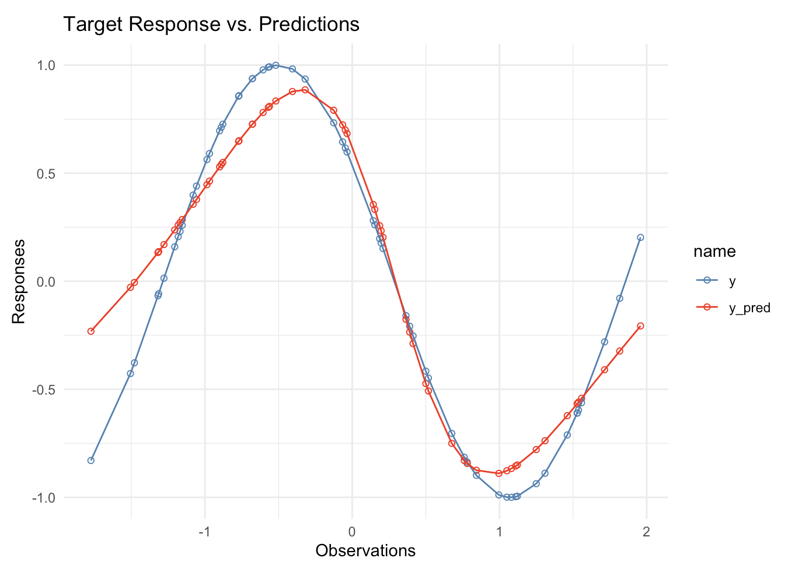
Example of construction of Plain vanilla network architecture
ANN’s (Artificial Neural Networks) is the simplest implementation of deep learning model architectures that mimic the human brain’s neural network. The simplest form of ANN is a single-layer network, also known as a “plain vanilla” network. This network consists of an input layer, a hidden layer, and an output layer. The hidden layer transforms the input data into a new set of features, which are then used to predict the response variable.
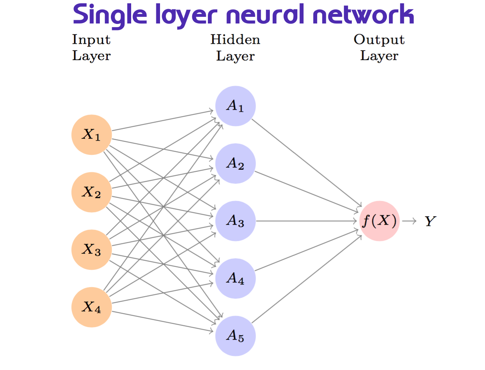
In the image above, we have some predictors \(x_i\) that are fed into the hidden layer, which then transforms them into a new set of features \(h_k(x)\), which are then used to predict the response variable \(y\).
Build synthetic data
Let’s create a synthetic dataset to demonstrate the construction of a plain vanilla network. We will generate a dataset with 60 observations and two predictors, x and y, using the following steps:
PredictorsasUniformdistributed variables ranging between[-2, 2]:
set.seed(100)
x <- runif(60, min=-2, max=2)ResponseVariable as function of the predictors:
y <- function(x) {
Y = (cos(2*x + 1))
return(Y)
}data <- tibble(y=y(x),x)
head(data)# A tibble: 6 × 2
y x
<dbl> <dbl>
1 0.859 -0.769
2 0.591 -0.969
3 0.152 0.209
4 -0.829 -1.77
5 0.733 -0.126
6 0.645 -0.0649data %>% summary() y x
Min. :-0.99978 Min. :-1.77447
1st Qu.:-0.59934 1st Qu.:-0.89194
Median : 0.15559 Median :-0.04092
Mean : 0.02628 Mean : 0.01437
3rd Qu.: 0.62358 3rd Qu.: 0.88138
Max. : 0.99930 Max. : 1.95826 EDA - Exploratory Data Analysis
Let’s visualize our synthetic data:
data %>%
ggplot(aes(x, y)) +
geom_line() +
geom_point() +
geom_hline(yintercept=0,
linetype="dashed", color="grey")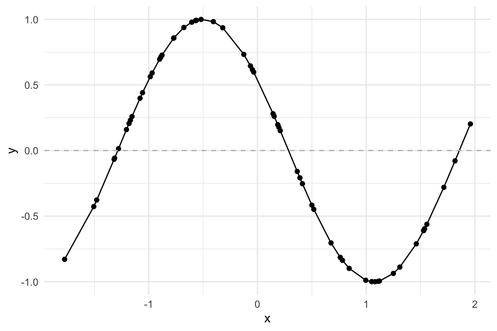
Parameters estimation
Now that we have the data, we attempt to replicate the distribution of this data with a model using artificial neural network technique with a single hidden layer. The model will have the following parameters:
Model Formula:
\[f(X)=\beta_0+\sum_{k=1}^K{\beta_kh_k(X)}\]
Where, \(h_k\) is the hidden layer, \(k=1,...,K\) the number of activations, \(\beta_0,\beta_1,...,\beta_K\) the coefficients , and \(w_{10},...,w_{kp}\) the weights.
The hidden layer computes a number of activations.
Number of activations
Initialize the number of hidden neurons \(k\), which is the number of activations in the hidden layer:
hidden_neurons = 5The number of hidden neurons is a hyperparameter that needs to be tuned. The more neurons, the more complex the model, but it can also lead to overfitting. You can think of a neuron as a connection between the input and output layers. The more neurons, the more connections, and the more complex the model.
We have set to have 5 hidden neurons in this example. This means that the hidden layer will compute 5 different linear combinations of the input \(X\). This linear combination is then squashed through an activation function \(g(·)\) to transform it.
The function that takes the input \(X\) and produces an output \(A_k\), the activation.
Activation Function
The activation function is a non-linear transformation of the input layers \(X_1,X_2,...,X_p\) which transform to \(h_k(X)\) while learning during the training of the network. It is a function that decides whether a neuron should be activated or not by calculating the weighted sum and further adding bias with it. The purpose of the activation function is to introduce non-linearity into the output of a neuron.
\[A_k=h_k(X)=g(z)\]
\(g(z)\) is a function used in logistic regression to convert a linear function into probabilities between zero and one.
To be more explicit, the activation function is a function that takes the input signal and generates an output signal, but takes into account a threshold, meaning that it will only be activated if the signal is above a certain threshold.
We have specified 5 different activation functions to compare their performance, and we will use the sigmoid function as the activation function in this example.
Type of Activation functions
There are several types of activation functions, each with its own characteristics, but all have in common that they introduce non-linearity into the first level of output provided.
Some of the most common types of activation functions are:
Sigmoidfunction:
\[g(z)=\frac{e^z}{1+e^z}=\frac{1}{1+ e^{-z}}\]
sigmoid <- function(x) {
z = (1 / (1 + exp(-x)))
return(z)
}ReLU(Rectified Linear Unit) function:
\[g(z) = max(0, z)\]
relu <- function(x) {
z = ifelse(x < 0, 0, x)
return(z)
}SoftPlusFunction
\[g(z) = \log(1 + e^z)\]
This is a smooth approximation to the ReLU function. Firstly introduced in 2001, Softplus is an alternative to traditional functions because it is differentiable and its derivative is easy to demonstrate (see source: https://sefiks.com/2017/08/11/softplus-as-a-neural-networks-activation-function/).
softplus <- function(x) {
z = log(1 + exp(x))
return(z)
}- Other types are:
- Polynomials/Splines: \(x^2\)
- Hyperbolic tanh: \(tanh(x) = (e^x – e^-x) / (e^x + e^-x)\)
Let’s compare the activation functions:
data %>%
mutate(z=sigmoid(x)) %>%
ggplot() +
geom_line(aes(x, z)) +
ylim(0, 1)
data %>%
ggplot() +
geom_line(aes(x, relu(x) * 1/2.4))
data %>%
ggplot() +
geom_line(aes(x, softplus(x)))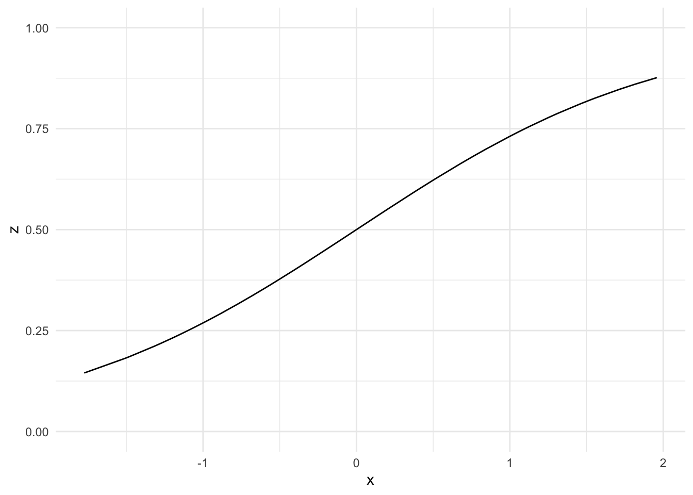
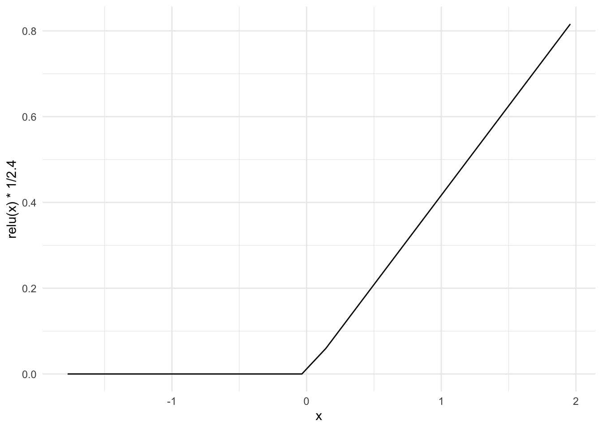
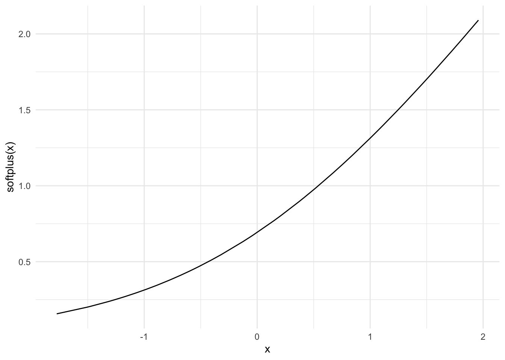
And now look at how the Sigmoid differs from the ReLU function:
data %>%
ggplot() +
geom_line(aes(x, sigmoid(x))) +
# relu resized for comparison
geom_line(aes(x, relu(x) * 1/2.4))+
labs(y="Sigmoid vs ReLU")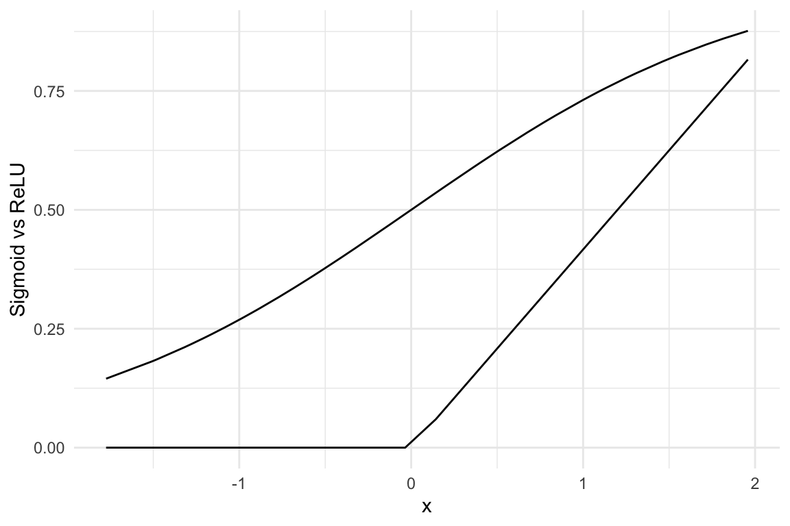
Our model is a model in the model:
\[f(X)=\beta_0+\sum_{k=1}^K{\beta_kh_k(X)}\] \[A_k=h_k(X)=g(z)=g(w_{k0}+\sum_{j=1}^p{w_{kj}X_j})\]
\[f(X)=\beta_0+\sum_{k=1}^K{\beta_kg(w_{k0}+\sum_{wkj}^p{X_j})}\]
As you might have noticed in the formula above, the model is a linear combination of the input \(X\) and the weights \(w_{kj}\), which are adjusted during the training process. The activation function \(g(z)\) is applied to the linear combination of the input and weights to transform the output.
Let’s have a look at the weights and how they are initialized.
Weights Initialization
The weights are the parameters of the model that are adjusted during the training process. They can be considered as the coefficients of the hidden layer model.
They are initialized randomly, and the model is trained to adjust these weights during the training process. The weights are adjusted using the backpropagation algorithm, which computes the gradient of the loss function with respect to the weights. Then, the weights are updated using the gradient descent algorithm. We will see how this is done in the next section.
The weights are initialized randomly to break the symmetry and prevent the model from getting stuck in a local minimum. In this case we use a normal distribution with a mean of 0 and a standard deviation of 1 to initialize the weights.
Randomly initializing the weights as i.i.d. \(W \sim N(0,1)\):
w1 = matrix(rnorm(2*hidden_neurons),
nrow=hidden_neurons,
ncol=2)
w2 = matrix(rnorm(hidden_neurons + 1),
nrow=1,
ncol=(hidden_neurons + 1))The constant term \(w_{k0}\) will shift the inflection point, and transform a linear function to a non-linear one. The weights are adjusted during the training process to minimize the error between the predicted and actual values.
The model derives five new features by computing five different linear combinations of \(X\), and then squashes each through an activation function \(g(·)\) to transform it.
data %>%
ggplot(aes(x, y)) +
geom_point(shape=21,
stroke=0.5,
fill="grey",
color="grey20") +
geom_line(linewidth=0.2) +
geom_smooth(method = "lm",
color="steelblue",
se=F) +
geom_line(aes(x, sigmoid(y)),
linetype="dashed",
color="steelblue")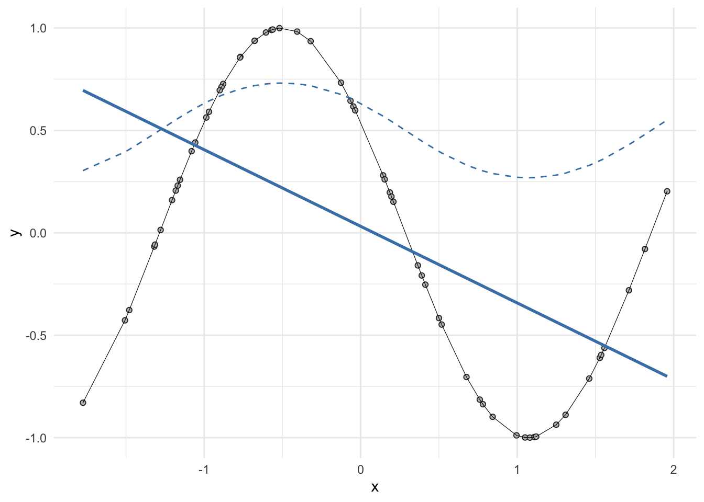
FeedForward
The meaning of feedforward is used to describe the process of moving the input data through the network to obtain the predicted output. The feedforward process is the first step in the training process of the neural network.
Here is a function that computes the output of the model given the inputs: data, weights, and number of activations. It computes the output by multiplying the input data by the weights and applying the activation function to the result. It is a matrix multiplication (%*%), which is a common operation in unsupervised learning algorithms.
feedForward <- function(x, w1, w2, activation) {
output <- rep(0, length(x))
for (i in 1:length(x)) {
a1 = w1 %*% matrix(rbind(1, x[i]), ncol=1)
z1 = activation(a1)
a2 = w2 %*% matrix(rbind(1, z1), ncol=1)
output[i] = a2
}
return(output)
}Derivative Activation Function
Now, that we have the feedforward function, we need to compute the derivative of the activation function. The backpropagation algorithm multiplies the derivative of the activation function.
Backpropagation algorithmmultiplies the derivative of the activation function.
Here is a recap of the definition of derivative formula, which is applied any time the output released by the activation function is met in the network. And so, a new minimum is found. It will be more clear through the end of the post.
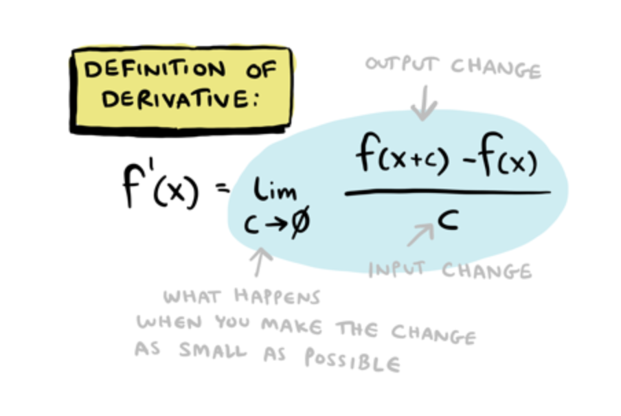
So, it is fundamental to define the derivative of the activation function needed for computing the gradient. For this example, we will use the derivative of the sigmoid function.
derivativeActivation <- function(x) {
g = (sigmoid(x) * (1 - sigmoid(x)))
return(g)
}Model Error
Function for computing model error is the sum of squared errors (SSE) between the predicted and actual values.
modelError <- function(x, y, w1, w2, activation) {
# Predictions
preds <- feedForward(x, w1, w2, activation)
# Error calculation
SSE <- sum((y - preds) ** 2)
return (SSE)
}Back-Propagation
So, this is the time for computing the gradients.
What are the gradients?
The gradients are the derivatives of the cost function with respect to the weights. The backpropagation algorithm computes the gradient of the loss function with respect to the weights.
The gradients are then used to update the weights using the gradient descent algorithm.
backPropagation <- function(x, y, w1, w2,
activation, derivativeActivation) {
#predicted values
preds <- feedForward(x, w1, w2, activation)
#Derivative of the cost function (first term)
derivCost <- -2 * (y - preds)
#Gradients for the weights
dW1 <- matrix(0, ncol=2, nrow=nrow(w1))
dW2 <- matrix(rep(0, length(x) * (dim(w2)[2])), nrow=length(x))
# Computing the Gradient for W2
for (i in 1:length(x)) {
a1 = w1 %*% matrix(rbind(1, x[i]), ncol=1)
da2dW2 = matrix(rbind(1, activation(a1)), nrow=1)
dW2[i,] = derivCost[i] * da2dW2
}
# Computing the gradient for W1
for (i in 1:length(x)) {
a1 = w1 %*% matrix(rbind(1, x[i]), ncol=1)
da2da1 = derivativeActivation(a1) * matrix(w2[,-1], ncol=1)
da2dW1 = da2da1 %*% matrix(rbind(1, x[i]), nrow=1)
dW1 = dW1 + derivCost[i] * da2dW1
}
# Storing gradients for w1, w2 in a list
gradient <- list(dW1, colSums(dW2))
return (gradient)
}Stochastic Gradient Descent
Defining our Stochastic Gradient Descent algorithm which will adjust our weight matrices.
SGD <- function(x, y, w1, w2, activation, derivative, learnRate, epochs) {
SSEvec <- rep(NA, epochs) # Empty array to store SSE values after each epoch
SSEvec[1] = modelError(x, y, w1, w2, activation)
for (j in 1:epochs) {
for (i in 1:length(x)) {
gradient <- backPropagation(x[i], y[i], w1, w2, activation, derivative)
# Adjusting model parameters for a given number of epochs
w1 <- w1 - learnRate * gradient[[1]]
w2 <- w2 - learnRate * gradient[[2]]
}
SSEvec[j+1] <- modelError(x, y, w1, w2, activation)
# Storing SSE values after each iteration
}
# Beta vector holding model parameters
B <- list(w1, w2)
result <- list(B, SSEvec)
return(result)
}Modeling
Running the SGD function to obtain our optimized model and parameters:
model <- SGD(x, y(x), w1, w2,
activation = sigmoid,
derivative = derivativeActivation,
learnRate = 0.01,
epochs = 200)Obtaining our adjusted SSE’s for each epoch:
SSE <- model[[2]]Model Visualization
Plotting the SSE from each epoch vs number of epochs
model_data <- tibble(x=seq(0, 200, 1), SSE)
ggplot(model_data,aes(x, SSE)) +
geom_line(linewidth=0.1)+
geom_point(shape=21,
stroke=0.2,
fill=alpha("steelblue", 0.3),
color="brown") +
labs(title="Model SSE by Number of Epochs",
x = "Epochs", y = "Error")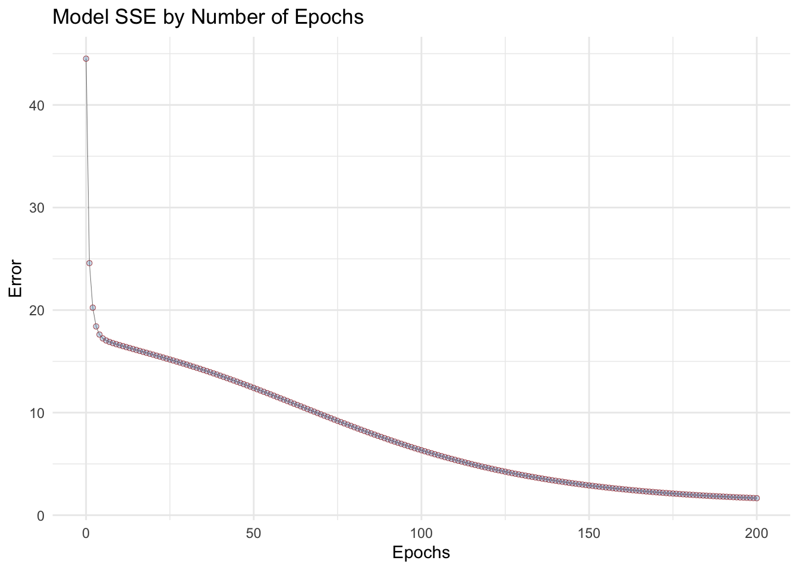
Parameters optimization
Extracting our new parameters from our model.
new_w1 <- model[[1]][[1]]
new_w2 <- model[[1]][[2]]Comparing our old weight matrices against the new ones.
par(mfrow=c(1,2))
plot(w1,new_w1)
abline(0,1)
plot(w2,new_w2)
abline(0,1)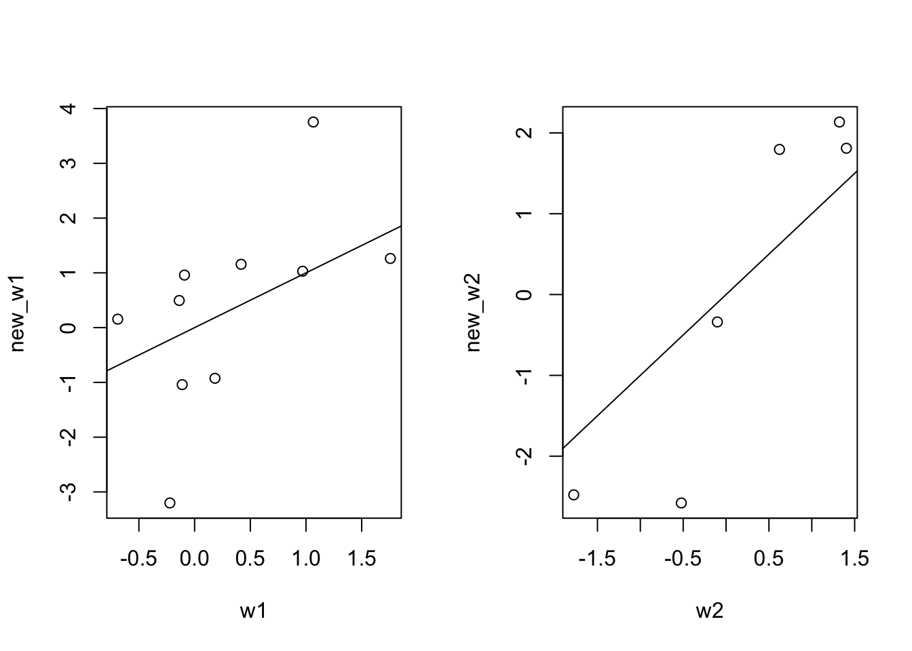
New Predictions
Obtaining our new predictions using our optimized parameters.
y_pred <- feedForward(x, new_w1, new_w2, sigmoid)Plotting training data against our model predictions
data %>%
mutate(y_pred=y_pred) %>%
pivot_longer(cols = c(y, y_pred)) %>%
ggplot(aes(x, value, group=name, color=name)) +
geom_point(shape=21, stroke=0.5) +
geom_line() +
scale_color_discrete(type = c("steelblue", "red")) +
labs(title= "Target Response vs. Predictions",
x="Observations",
y="Responses")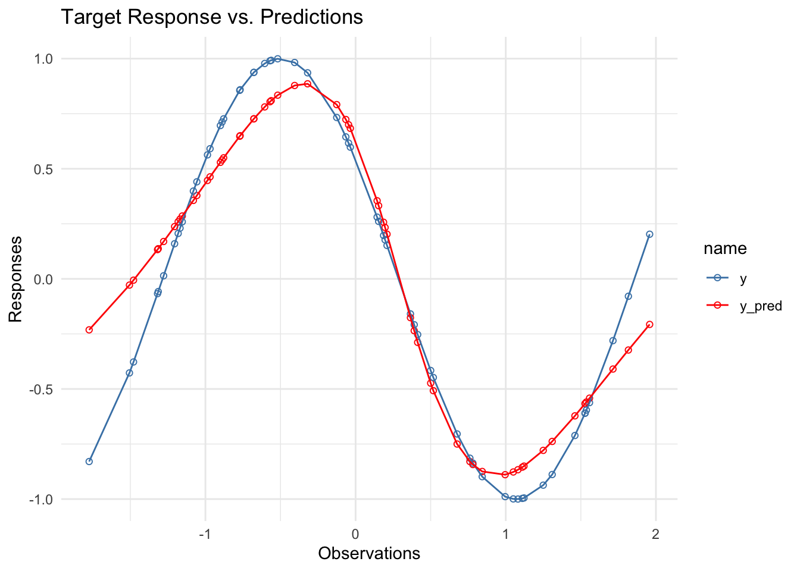
Resources
- The code used for this example is customized from
tristanoprofettogithub repository: https://github.com/tristanoprofetto/neural-networks/blob/main/ANN/Regressor/feedforward.R - StatQuest: Neural Networks Pt. 1: Inside the Black Box https://www.youtube.com/watch?v=CqOfi41LfDw
- Other-Resources: https://towardsdatascience.com/the-mostly-complete-chart-of-neural-networks-explained-3fb6f2367464